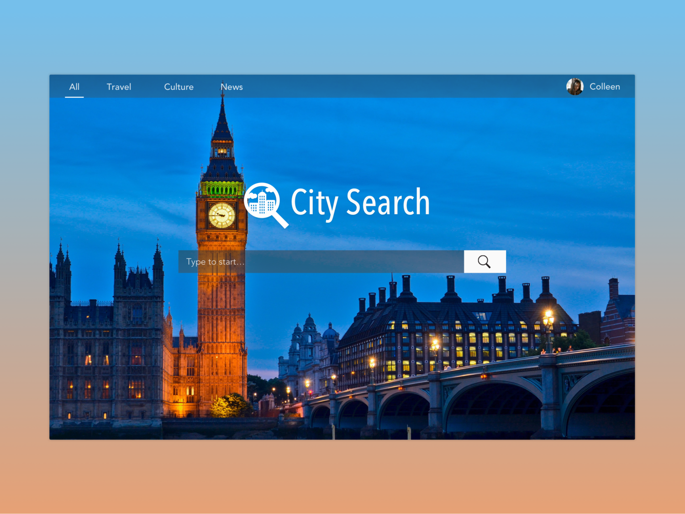
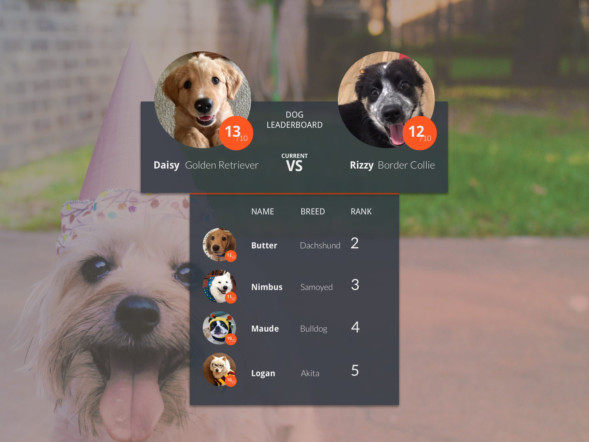

UI design
UI Challenges
Design challenges based on prompts to practice UI patterns, frameworks and standards.
Role
UI Design
Motion design
Introduction
Purpose
These challenges are an effort to work towards becoming an expert in UI patterns and design elements. Ideally I will be spending a few hours on each design that could be used for mobile and responsive web or an app. I'll deviate from this baseline goal if I have more time or get excited about a specific project.
Process and sketches
I want to include the entirety of my process here, and the origins of each project is a good way to begin this page. Before starting on a project digitally, I sketch my ideas in a notebook. Not all parts make it into the final digital design, and sometimes the digital version looks different as I work through it on the screen. Because I sometimes have multiple projects per page, I simply photographed the pages of my sketchbook and put them in the gallery to the right here.
Challenges
Day 27 - Dropdown
I used the bookmarks bar on a web browser for this one because I always notice how cluttered any bookmarks manager is.
Day 26 - Subscribe
I promise to leave the blue and white behind next time! This is a simple animation of a subscribe action for an email list. I designed the letters and mailbox in Illustrator and brought them into Sketch. Given more time, I'd work on those longer.
Day 25 - Smart TV Control
This smart TV remote includes a normal, expected remote interface as well as a more robust, forward thinking interface.
The first screen is a clean expression of what one would typically expect from a remote. I decided to use the bare minimum of TV operations. The number pad is accessible via button press so as not to clutter the screen. I decided on a touch target size (shown below the video) which drove my organization of the screen.
The second screen is closer to streaming services, which allows searching the TV directory for channels and shows as well offering recommendations on currently based on watching history. Below the suggestions, quick access to favorite channels are populated based on history as well. Finally, access to a full TV guide resides at the bottom of the screen, for in depth exploration of past, current and future content.
Day 24 - Boarding Pass
The mobile form factor seemed most appropriate for this boarding pass because to actually be of use, it must be presentable. I began by organizing the key information for a boarding pass:
- Airline
- Flight Number
- Departing: Date, time, terminal, gate
- Arriving: Date, time, terminal, gate
After sketching out wireframes, I realized the scannable QR or bar code takes up a significant amount of space. Rather than leave any part of the pass hidden (via scroll or otherwise) I made it interactive. By tapping the button on the bottom, the QR code expands for scanning.
Key information is highlighted in a much brighter blue for quick reference.
Day 23 - Onboarding
When thinking about an onboarding process, I decided to modify an existing one that I thought had an opportunity to be improved.
Instagram's onboarding process suggests finding Facebook friends to follow but neglects to offer finding popular accounts that are no one's "friends" -- accounts that offer cute dogs, travel photos and food photos. I mapped the onboarding process to decide where to put the new steps, which fit in neatly after finding friends on Facebook.
To find accounts, I created a screen that asks users what they're interested in which populates the following screen with example photos of accounts they may be interested in following.
Map of onboarding flow and opportunity area. Map of onboarding flow and opportunity area.
I followed Instagram's design style -- the Instagram card is a well established paradigm and swiping to see more accounts is a familiar action on other platforms. When the user decides they've followed enough accounts, pressing "done" at the bottom moves to already existing next step, uploading a profile photo.
I used Sketch to design the mockups and Principle to animate them. I worked through many variations of the interface design before arriving at the final design.
Day 22 - Search
I tried to make a search logo, search bar, and options / profile top bar that would be able to accommodate any background photo. By applying a subtle background gradient from the top down, the top bar looks the same stylistically as the search bar but is more legible.
I made the "City Search" logo in Illustrator and brought that into Sketch, where the rest was designed.
Day 21 - Home Monitor
The first challenge for this design was figuring what was important to show -- after considering many details I decided on temperature, lights, and doors. Thinking through current wattage usage, time of heat or air conditioning on, etc, I decided that simple was better. I also fought with allowing change directly from the cards, but decided this would be too overwhelming and complicated. The user will be able to control aspects of their home by pressing figure they wish to interact with instead. A room selector allows monitoring of individual rooms.
The temperature displays what the desired temperature is as well as if it is heating or cooling to achieve it.
The lights are indicated as on or off quickly with the color of the bulb, but also in text form underneath. A bar displays the relative percentage of time off to on in the room.
Finally, the amount of doors open are shown as quick reference followed by a more complete list of the status of doors (be it open, closed, or locked).
Day 20 - Location Tracker
My location tracker features three phases of the day: Morning, afternoon and evening -- on the right side the current location is highlighted in blue.
The map reflects the gray and blue color indicating point in the day. The blue path shows the most recently travelled route.
Day 19 - Leaderboard
My past few designs have been fairly restrained so for this I wanted to be more creative by using images breaking out of their boxes and a multi part container. I put dogs up head to head in this leaderboard design using information sourced from the great We Rate Dogs Twitter account.
The badge on the photos of the dogs is their rating (out of 10), I included this information along with their names, breed, and on the lower container, the rank.
Finally, I designed the lower container to be a standard list while the top part features the two dogs facing off to be number one.
Day 18 - Analytics
Recently I used a carbon emissions calculator to see how much I was contributing to global warming, and it got me thinking that reflecting on transportation as it relates to this would be a useful tool. Here I've used a bar graph to plot the distance in miles travelled per day and what mode of transportation was used. The line graph part shows how much carbon emissions were emitted daily.
Day 17 - Receipt
This receipt is for a Miir vacuum sealed water bottle, a favorite item that I own. I decided to group information in item and order details, followed by the ability to print your receipt in case you need to return the item in person.
Day 16 - Pop Up
This is a small pop up asking a website visitor to sign up for a newsletter. After creating the one on the left, I realized that it could be quickly adapted to many different companies by changing the logo and font style, which lead me to create the version on the right.
Day 15 - On/Off Button
This button represents on and off states. It's simple!
Day 14 - Countdown Timer
I wanted to use more organic forms as my past few items have been very angular. This countdown timer has the running time prominently and the original time set above. Below the time a bar shows a visual display of the countdown. Finally, the two main actions are pause and stop. After pause would turn to play and stop to reset.
Day 13 - Chat
Chat apps have a surprising amount of information that needs to be displayed. After making this I now appreciate that! My design is still missing a number of items such as entire friends list, timestamps, emojis (which we all know are the most important feature) and I'm sure other things.
I did want to include contextual actions, so when $8 is typed the opportunity to pay that amount of money is added in line.
Day 12 - E-Commerce
I created a single item e-commerce page for the Google Pixel. As an Android phone user, I'm really excited about this phone and what it means for Google!
The past few challenge items I've used a lot of color and I wanted to be more minimal for today's design so I drew influence from Google's marketing materials.
Day 11 - Settings
I designed an interface to control lights belonging to a smart home system. The overview of the room is meant to show where each light is located. Gray lights are off, and the lower opacity ones are not currently in the group selected. The "living room" group is selected and all the lights are on, shown by their full color -- the specific light selected is highlighted in blue.
Settings on the left show light name, offers an easy on/off of the light, allow color and schedule adjustments, and grouping.
Settings on the left show light name, offers an easy on/off of the light, allow color and schedule adjustments, and grouping.
Day 10 - Flash Message
This was another one that I wanted to animate, since the message would likely be updating on the page as the user tried to submit something. It's intended to be a confirmation that they were able to log in.
Day 9 - Social Share
Motion seemed like a key component of this UI element so I animated the interaction. Following the share confirmation, a modal would appear to confirm details of the share.
Day 8 - Music Player
I love album artwork and wanted to design a player that featured it prominently. The two instances of the players have shuffle and repeat turned on and off, and are also songs I've been listening to a lot lately. I chose the red gradient because it offers identity and stands out in the player.
Day 7 - 404 Page
I tried to design a different background rather than a photo or a gradient, and rounded the corners which I thought contrasted with the sharper line in the background.
Day 6 - Profile
I created a general online profile page that lists a name, a few details about who the person is and their social media following. We're defined oftentimes how much information is available to us online, so I thought that would be important information for a profile. Finally, the call to action is to message.
I couldn't decide which version I liked best, so I put them both here.
Day 5 - App Icon
I took advantage of this opportunity to create an icon for the Eos app. Inspired by the transition to the night and day, the pillow replaces the sun and moon, alluding to the alarm functionality of the app.
Day 4 - Calculator
I stuck to the basics today, and made a simple calculator. While status bar is clearly iOS, this design would work equally well across platforms. I emphasized the numbers above the operators.
Pressing equal moves the answer of the current equation to the top so that more can be done to it if desired.
Day 3 - Landing Page
This prompt was to create a landing page for a product, person, etc. I chose to create a landing page for Tobacco, a fantastic artist (if you haven't listened, do so!)
Featured on the home page is his latest album with the call to action of "Order Now" and reviews and commentary on the album.
Given more time, I would animate the smoky backdrop. Some subtle movement would turn this already interesting photo into something mesmerizing.
Day 2 - Credit Card Form
Today I design the credit card form as a UI "card". The thought behind this format is that it could be adaptable to mobile or web. Behind the current credit card, there are two different saved cards.
The CVV code is a piece of information to prompt -- its the only piece that is on the back of the card. Here I solved the challenge by creating a tiny version of the credit card next to the prompt.
Day 1 - Sign Up Screen
In addition to creating a single sign up screen using Sketch, I animated the process. See it in action in the video. I designed the screen to be used for a responsive website as well, as seen below the mobile UI flow.